Returns theoretical spectral density evaluated in ARMA and ARFIMA processes.
(type: numeric) AR vector. If the time serie doesn't have AR term then omit it. For more details see the examples.
(type: numeric) MA vector. If the time serie doesn't have MA term then omit it. For more details see the examples.
(type: numeric) Long-memory parameter. If d is zero, then the process is ARMA(p,q).
(type: numeric) Noise scale factor, by default is 1.
(type: numeric) \(\lambda\) parameter on which the spectral
density is calculated/computed. If lambda=NULL then it is considered a
sequence between 0 and \(\pi\).
An unnamed vector of numeric class.
The spectral density of an ARFIMA(p,d,q) processes is
$$f(\lambda) = \frac{\sigma^2}{2\pi} \cdot \bigg(2\,
\sin(\lambda/2)\bigg)^{-2d} \cdot
\frac{\bigg|\theta\bigg(\exp\bigg(-i\lambda\bigg)\bigg)\bigg|^2}
{\bigg|\phi\bigg(\exp\bigg(-i\lambda\bigg)\bigg)\bigg|^2}$$
With \(-\pi \le \lambda \le \pi\) and \(-1 < d < 1/2\). \(|x|\) is the
Mod of \(x\). LSTS_sd returns the
values corresponding to \(f(\lambda)\). When d is zero, the spectral
density corresponds to an ARMA(p,q).
For more information on theoretical foundations and estimation methods see Brockwell PJ, Davis RA, Calder MV (2002). Introduction to time series and forecasting, volume 2. Springer. Palma W (2007). Long-memory time series: theory and methods, volume 662. John Wiley \& Sons.
# Spectral Density AR(1)
require(ggplot2)
f <- spectral.density(ar = 0.5, lambda = malleco)
ggplot(data.frame(x = malleco, y = f)) +
geom_line(aes(x = as.numeric(x), y = as.numeric(y))) +
labs(x = "Frequency", y = "Spectral Density") +
theme_minimal()
